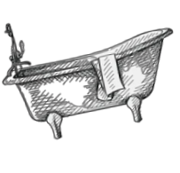

I Love Playing violin,long Baths!!

So Nice
To Meet You Finally!!
Shizuka Minamoto (源 静香, Minamoto Shizuka) (born on 8 May,[a] Taurus), nicknamed Shizuka-chan (しずかちゃん) is a smart, kind and pretty girl. She is often represented by the colour pink, and is seen wearing a pink shirt and skirt. The word 'Shizuka (しずか)' means 'Quiet'. She is Nobita's best friend and love-interest. She does not shun Nobita due to his failing grades, lazy disposition or constant failures. In fact, she often tries to encourage him to do better, though she usually fails to convince him. Shizuka likes to take a bath several times a day; however, a running gag in the series is that she is sometimes interrupted by a sudden appearance of Nobita (sometimes Doraemon, Gian, or Suneo) usually due to misuse of Doraemon's gadgets like the Anywhere Door (Doko Demo Doa in Japanese). Shizuka's skirt is also frequently seen getting flipped, either by Nobita misusing Doraemon's gadgets, or by the wind.